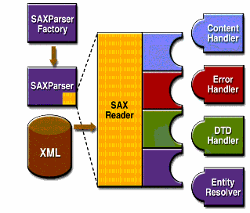

El esquema básico de las IPAs de análisis SAX se muestra en la Figura 1-1. Para
iniciar el proceso, una instancia de la clase SAXParserFactory se usa para generar una instancia
del analizador.

El analizador envuelve un objeto SAXReader. Cuando el método parse() del analizador
se invoca, el reader invoca uno de los varios métodos de retrollamada implementados en la aplicación. Esos
métodos se definen por las interfaces ContentHandler, ErrorHandler,
DTDHandler, y EntityResolver.
Aquí tiene un sumario de las IPAs clave de SAX:
SAXParserFactory
Un objeto SAXParserFactory crea una instancia del analizador determinado por la propiedad
del sistema, javax.xml.parsers.SAXParserFactory.
SAXParser
La interfaz SAXParser define varias clases de métodos parse(). En general,
pasa una fuente de datos XML y un objeto DefaultHandler al analizador, el cual procesa el
XML e invoca los métodos apropiados en el objeto manejador.
SAXReader
SAXParser envuelve un SAXReader. Por lo general, eso no le importa, pero
de vez en cuando necesita obtenerlo usando getXMLReader() de SAXParser para
poder configurarlo. Es el SAXReader el que continúa la conversación con los controladores
de eventos SAX que defina.
DefaultHandler
No se muestra en el diagrama, un DefaultHandler implementa las interfaces
ContentHandler, ErrorHandler, DTDHandler, y
EntityResolver (con métodos nulos), de forma que pueda sobreescribir sólo aquellos en los
que esté interesado.
ContentHandler
Métodos tales como startDocument, endDocument, startElement, y
endElement son invocados cuando se reconoce una etiqueta XML. Esta interfaz también define
los métodos characters() y processingInstruction(), que son invocados cuando
el analizador encuentra el texto en un elemento XML o una instrucción de procesamiento en línea,
respectivamente.
ErrorHandler
Se invocan los métodos error(), fatalError(), y warning()
en respuesta a varios errores del análisis. El manejador predeterminado de errores lanza una excepción
para los errores fatales e ignora otros errores (incluyendo errores de validaciones). Esta es una de las
razones por las que necesita saber algo sobre el analizador SAX, incluso si está usando DOM. Algunas
veces, la aplicación puede ser capaz de recuperarse de un error de validación. Otras veces, puede
necesitar generar una excepción. Para asegurar el manejo correcto, necesita proporcionar su propio
manejador de errores al analizador.
DTDHandler
Define métodos que generalmente nunca se le pedirá que utilice. Se usan cuando se procesa un DTD para reconocer y actuar sobre declaraciones sobre una entidad no analizada.
EntityResolver
Se invoca el método resolveEntity cuando el analizador debe identificar datos
identificados por una URI. En la mayoría de los casos, una URI es simplemente una URL, que especifica
la ubicación de un documento, pero en algunos casos el documento puede ser identificado por una URN
— un identificador público, o nombre, que es único en el espacio web. El identificador público
puede ser especificado además de la URL. El EntityResolver puede entonces usar el
identificador público en vez de la URL para encontrar el documento — por ejemplo, para acceder a
una copia local del documento si uno existe.
Una aplicación típica implementa la mayoría de los métodos ContentHandler, como mínimo, Ya que
las implementaciones predeterminadas de las interfaces ignoran todas las entradas excepto los errores fatales,
una implementación robusta también puede querer implementar los métodos ErrorHandler.
El analizador SAX se define en los paquetes listados en la siguiente Tabla .
|
Paquetes |
Descripción |
|---|---|
|
|
Define las interfaces SAX. El nombre |
|
|
Define las extensiones de SAX que se usan para hacer procesado SAX más sofisticado — por ejemplo, para procesar una Definición de Tipo de Documento (DTD) o para ver la sintaxis detallada de un fichero. |
|
|
Contiene las clases de ayuda que hacen más fácil usar SAX — por ejemplo, definiendo un manejador predeterminado que tiene métodos nulos para todas las interfaces, de forma que usted sólo necesita sobreescribir aquellas que en realidad quiera implementar. |
|
|
Define la clase |